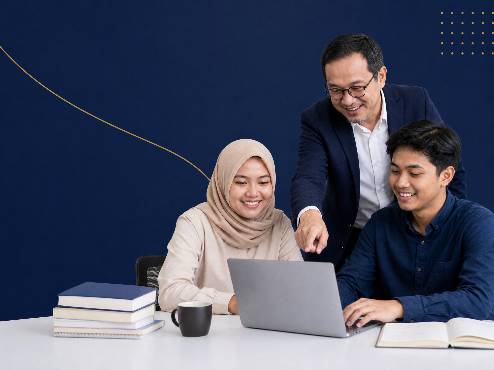

EduDraft siap membantu Anda menyusun karya ilmiah berkualitas dengan bimbingan dari tim profesional dan berpengalaman.

Dikerjakan oleh tim ahli di bidangnya
Karya ilmiah berkualitas, sesuai kaidah akademik
Kerahasiaan data klien menjadi prioritas kami
Bimbingan dari awal hingga sidang
Kami bekerja dengan jujur, transparan, dan bertanggung jawab.
Kami berkomitmen menghasilkan karya yang berkualitas tinggi.
Kami percaya sinergi adalah kunci untuk hasil terbaik.
Privasi dan keamanan data klien adalah prioritas kami.
Kami terus belajar dan berinovasi untuk memberi solusi terbaik.
Sampaikan kebutuhan Anda kepada kami
Dapatkan penawaran harga dan sepakati ruang lingkup
Tim kami mulai mengerjakan sesuai kesepakatan
Kami lakukan revisi hingga Anda puas
Karya ilmiah siap digunakan untuk sidang
Solusi lengkap untuk kebutuhan akademik Anda
Paket lengkap penyusunan skripsi hingga siap sidang
Paket lengkap penyusunan tesis hingga siap sidang
Bantu publish artikel di jurnal nasional & internasional
Butuh bantuan per bab sesuai kebutuhan Anda
PENGALAMAN & KOMITMEN
EduDraft telah membantu ratusan mahasiswa dan peneliti dalam menyelesaikan karya ilmiah di berbagai jenjang pendidikan dan bidang keilmuan.
Kami berkomitmen untuk terus memberikan layanan terbaik dengan standar akademik tinggi dan pendekatan yang humanis.
Mahasiswa & peneliti telah terbantu
Skripsi, tesis, jurnal dan penelitian
Klien dari berbagai kampus di Indonesia
Berdasarkan feedback klien kami
TIM EDUDRAFT
Founder
Memimpin visi dan strategi EduDraft untuk menjadi partner akademik terpercaya bagi mahasiswa dan peneliti.
Operation Manager
Bertanggung jawab dalam manajemen operasional, memastikan setiap proses layanan berjalan efektif dan efisien.
Academic Consultant Coordinator
Mengkoordinasi tim konsultan akademik untuk memberikan solusi terbaik yang sesuai dengan standar ilmiah.
Marketing and Branding
Mengelola strategi pemasaran dan membangun citra EduDraft agar semakin dikenal dan dipercaya oleh mahasiswa.
Editor and Proofreader
Memastikan setiap karya akademik bebas dari kesalahan dan disusun sesuai kaidah bahasa serta standar ilmiah.
Menjadi partner akademik terdepan di Indonesia yang memberdayakan mahasiswa dan peneliti menghasilkan karya ilmiah berkualitas dan berdampak.
Kami menyediakan layanan pendampingan skripsi mulai dari penentuan judul, penyusunan proposal, pengolahan data, penulisan skripsi, revisi, hingga persiapan sidang.
Tentu. Silakan konsultasikan kebutuhan skripsi Anda terlebih dahulu agar kami dapat membantu menentukan layanan yang sesuai.
Ya. Tersedia layanan pendampingan dari tahap awal hingga skripsi siap untuk sidang, menyesuaikan kebutuhan Anda.
Ya. Kami dapat membantu mendampingi proses revisi berdasarkan catatan atau arahan dari dosen pembimbing.
Ya. Kami menyediakan bantuan pengolahan dan analisis data sesuai metode penelitian yang digunakan.
Kami melayani berbagai bidang/jurusan sesuai dengan keahlian tim. Silakan konsultasikan judul dan jurusan Anda terlebih dahulu.
Waktu pengerjaan berbeda-beda tergantung jenis layanan, tingkat kesulitan, dan kebutuhan revisi. Estimasi akan disampaikan setelah kebutuhan Anda dikonsultasikan.
Biaya menyesuaikan jenis layanan, jumlah halaman, metode penelitian, tingkat kesulitan, dan kebutuhan pengerjaan. Hubungi konsultan untuk mendapatkan estimasi harga.
Klik tombol Konsultasi atau Pesan Sekarang, kemudian sampaikan jurusan, judul penelitian, serta kebutuhan Anda melalui WhatsApp.
Kami menjaga kerahasiaan data, dokumen, dan informasi yang diberikan selama proses konsultasi maupun pengerjaan.
Konsultasikan kebutuhan akademik Anda bersama tim EduDraft.